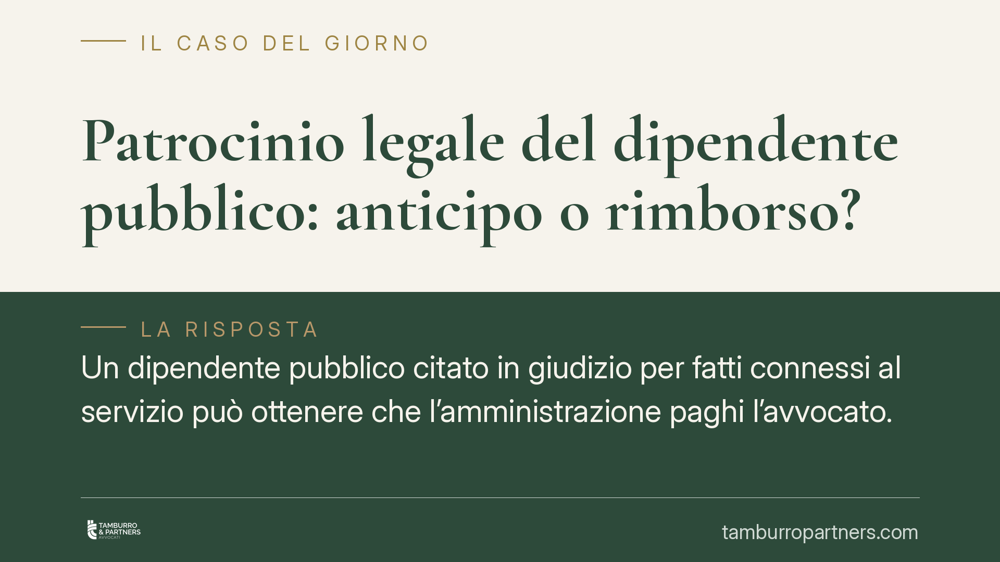

Patrocinio legale del dipendente pubblico: anticipo o rimborso?
Un dipendente pubblico citato in giudizio per fatti connessi al servizio può ottenere che l'amministrazione paghi l'avvocato. Ma l'anticipo immediato non è automatico: dipende dall'assenza di conflitto di interessi con l'ente e, talvolta, lascia il posto al solo rimborso a fine procedimento. Una distinzione che incide su chi sostiene i costi, e quando.

Il quadro di partenza
Il diritto del dipendente di un ente locale a ottenere il patrocinio legale a carico dell'amministrazione non è una novità. La disciplina di riferimento è storicamente contenuta nell'art. 28 del CCNL del comparto Regioni-Autonomie Locali, poi richiamato e rimodulato nelle tornate contrattuali successive (oggi comparto Funzioni Locali).
La regola generale è nota: l'ente assume gli oneri di difesa del dipendente coinvolto in un procedimento di responsabilità civile o penale per fatti o atti connessi all'espletamento del servizio e all'adempimento dei compiti d'ufficio, a condizione che non vi sia conflitto di interessi con l'amministrazione stessa.
> Nota sulla fonte. Le modifiche introdotte dalle ipotesi di CCNL in corso di definizione per il comparto Funzioni Locali vanno verificate negli estremi definitivi (data di sottoscrizione e numero di articolo), che cambiano a ogni tornata. In attesa del testo consolidato, i principi qui esposti si fondano sulla disciplina vigente e sull'orientamento consolidato della giurisprudenza.
Anticipo o rimborso: la distinzione che conta
Il punto decisivo è il *momento* in cui l'ente paga.
Anticipo (patrocinio diretto). L'amministrazione assume l'incarico difensivo sin dall'avvio del procedimento, scegliendo il legale d'intesa con il dipendente. È la forma più favorevole, perché il dipendente non anticipa nulla di tasca propria.
Rimborso successivo. L'ente interviene solo a conclusione del procedimento, ristorando le spese già sostenute dal dipendente, una volta accertato l'esito.
La linea di confine è il conflitto di interessi. Quando l'ente non può escludere, già all'inizio, di avere interessi contrapposti a quelli del dipendente, l'anticipo non è dovuto: si attende l'esito e si valuta il rimborso.
Si tratta di un principio già presente nel diritto vivente. La giurisprudenza, anche contabile, valorizzava da tempo anche il conflitto potenziale come causa ostativa all'anticipo. Ciò che le revisioni contrattuali tendono a fare è esplicitare e irrigidire un criterio già elaborato in sede interpretativa, non introdurre un principio inedito.
Non confondere i piani di valutazione
Un errore ricorrente è ritenere che il rimborso dipenda sempre dall'assenza di «dolo o colpa grave». Le soglie vanno distinte:
- in sede penale rileva, in linea di massima, il proscioglimento o l'assoluzione con formula piena;
- in sede civile rileva l'esclusione della responsabilità per il fatto connesso al servizio;
- in sede contabile (responsabilità amministrativa) opera la soglia del dolo o della colpa grave, che è altro rispetto all'assenza di conflitto richiesta per il patrocinio.
Il rimborso presuppone, in ogni caso, che il procedimento si sia chiuso senza condanna del dipendente e che i fatti fossero connessi all'ufficio. La Corte dei conti ha più volte ribadito che il rimborso non è dovuto quando difetta il nesso con il servizio o quando emerge un contrasto di interessi con l'ente.
Perché l'ente deve decidere con attenzione
L'ufficio del personale si muove tra due rischi speculari.
Da un lato, un diniego illegittimo dell'anticipo espone l'amministrazione a contenzioso con il dipendente e a possibile condanna alle spese. Dall'altro, un anticipo concesso con leggerezza, in presenza di un conflitto che andava rilevato, può tradursi in danno erariale per chi ha autorizzato la spesa.
La valutazione del conflitto, quindi, non è un passaggio formale: è l'elemento che protegge sia il dipendente sia il funzionario che firma.
Cosa fare in concreto
- Dipendente: comunica subito. Informa l'amministrazione dell'avvio del procedimento appena ne hai notizia e chiedi per iscritto l'assunzione degli oneri di difesa, specificando la connessione con il servizio.
- Dipendente: concorda il legale. Verifica che la scelta del difensore avvenga d'intesa con l'ente, come richiesto per il patrocinio diretto.
- Ufficio del personale: istruisci il conflitto. Documenta per iscritto la verifica, anche solo potenziale, di un contrasto di interessi: è il fulcro della decisione tra anticipo e rimborso.
- Ufficio del personale: motiva la scelta. Qualora opti per il solo rimborso a fine procedimento, esplicita le ragioni per ridurre il rischio di contenzioso.
- Entrambi: conserva la documentazione. Atti del procedimento, parcelle e corrispondenza sono indispensabili per il rimborso finale e per la sua quantificazione.
Consigliamo, per le posizioni dubbie, di acquisire un parere preventivo prima di autorizzare o rinunciare all'anticipo.
---
*Contributo informativo a cura di Tamburro & Partners - Avv. Giuseppe Tamburro. Non costituisce parere legale.*
Ogni storia di lavoro ha i suoi tempi.
Se gestisci HR e vuoi un confronto su contenzioso, ispezioni o licenziamenti, scrivi allo studio. Ti rispondiamo entro un giorno lavorativo.